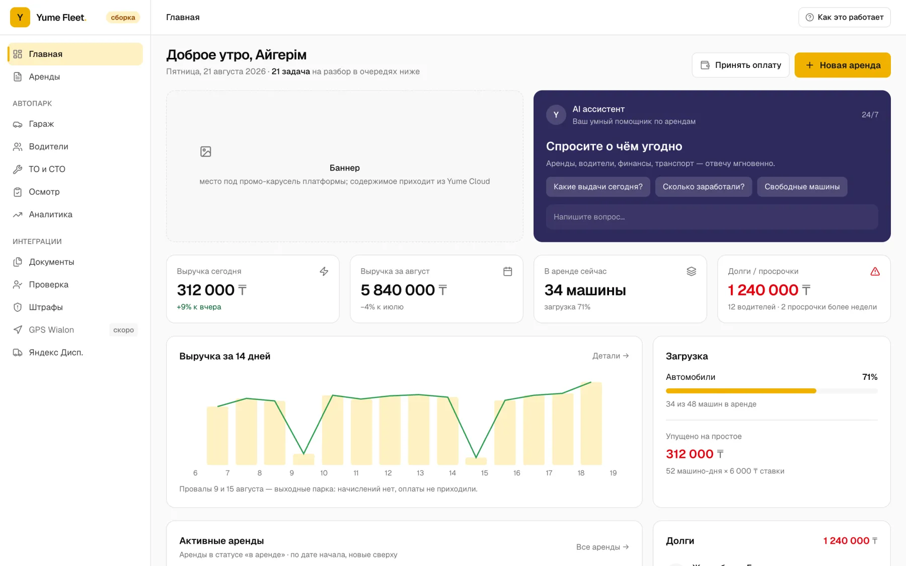
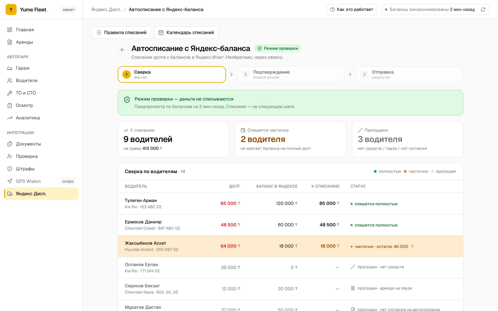
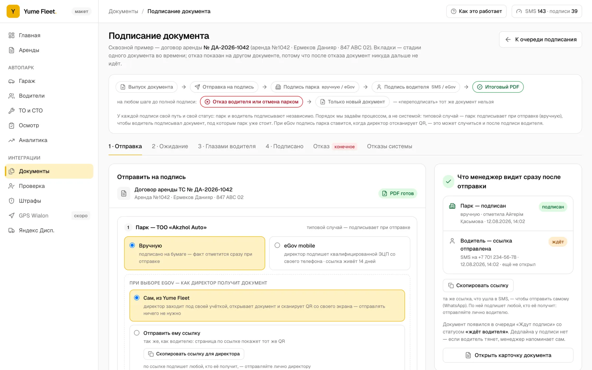
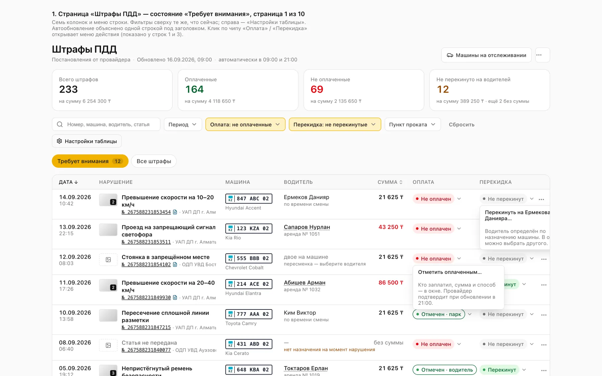
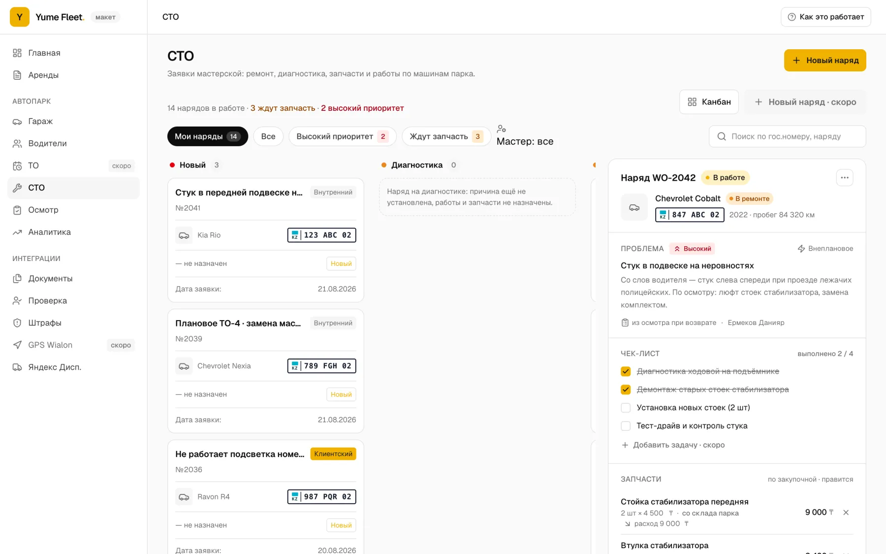
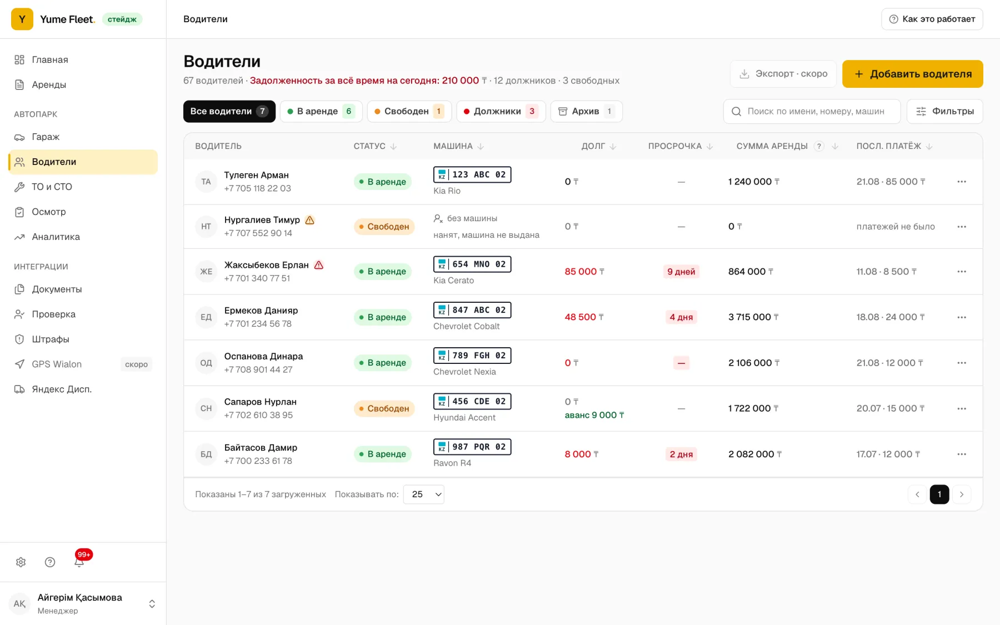
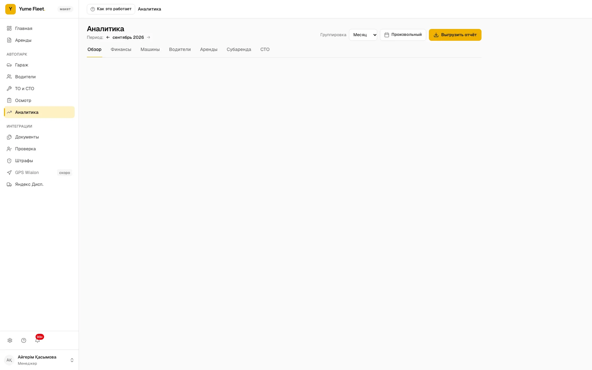
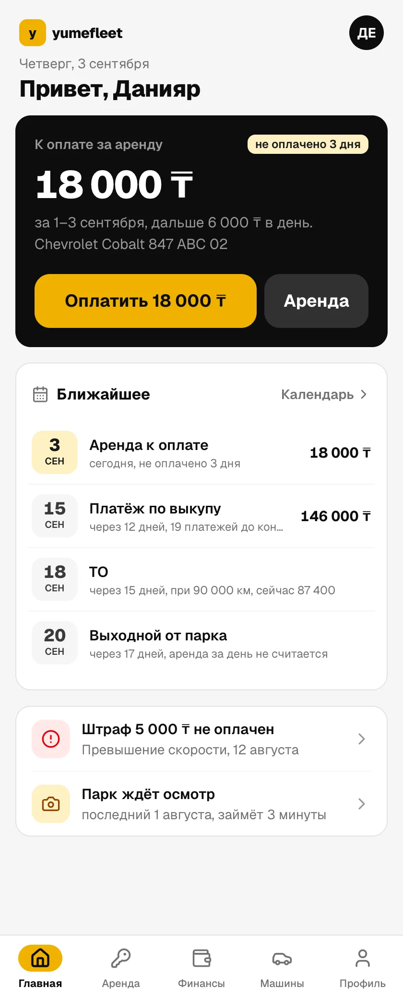
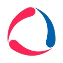

Никто не знает, где машины
Сколько свободно, у кого просрочка, какая в ремонте. Ответ собирается обзвоном за час и к вечеру уже врёт. Пока вы выясняете, машина стоит и не зарабатывает.
Если ответ занимает больше секунды, парк уже теряет. Yume Fleet держит водителей, машины и деньги в одном месте: долг растёт на экране каждый день, оплата приходит ссылкой Kaspi, штраф ПДД сам находит того, кто был за рулём.

Где теряет парк
Мы разобрали, как живут парки на тетрадях, Excel и WhatsApp. Деньги уходят в трёх местах.
Сколько свободно, у кого просрочка, какая в ремонте. Ответ собирается обзвоном за час и к вечеру уже врёт. Пока вы выясняете, машина стоит и не зарабатывает.
Перевод пришёл в WhatsApp и утонул между скриншотами. Долг всплывает в конце месяца, когда водитель уже сдал машину и спрашивать не с кого.
Проверки до выдачи нет, договор лежит в папке. Штраф ПДД приходит, когда скидка сгорела, а водителя в парке уже нет.
Что меняется
Внедрять месяцами нечего. Машины и водители заводятся за час, дальше система считает сама.
Три экрана
Три места, где вопрос закрывается экраном, а не звонком.
Документы, права, история аренд, долг и депозит одним списком. Кому нельзя выдавать машину, видно до выдачи, а не в суде.
Состояние, ОГПО, техосмотр, ремонты. Простой видно сразу: машина свободна и не зарабатывает ни тенге.
Начисления по дням, долги, переплаты, депозит. Предпросмотр и факт считает одна функция, поэтому цифры сходятся.
Что система делает за вас
Экраны настоящего продукта. Нажимайте на вкладки или подождите, они листаются сами.






Долг каждый день
Каждый день аренды начисляется автоматически. Пришла оплата в Kaspi, сумма встала в баланс. Не пришла, долг вырос и подсветился. Никаких сверок в конце месяца.
| Водитель | Машина | Тариф | Баланс |
|---|
Запуск
Мы заводим данные вместе с вами. Парк продолжает работать, ничего останавливать не нужно.
Загружаем парк таблицей: госномер, техпаспорт, марка, модель. Категории и пункты создаются сами.
База водителей с ИИН и телефоном. Текущие долги вносятся как стартовый баланс.
Подключаем ваш шаблон договора и кабинет Kaspi. С этого момента оплаты приходят сами.
Менеджеры получают приглашение ссылкой и роли. Вечером вы видите первый долг на экране.
Водителю
Ссылка на оплату открывается без входа и пароля: аренда, машина, долг за сегодня, кнопка «Оплатить через Kaspi». Меньше звонков «сколько я должен», меньше споров.

Интеграции
Ничего не нужно менять в привычных инструментах. Yume Fleet собирает данные из них в одно место.

Клиенты
Yume Fleet вырос из платформы Yume, на которой транспортные компании работают с 2024 года. Отзывы о ней ниже, отзывы о Fleet появятся после первых внедрений.
Те, кто работал с таксистами, знают, сколько проблем с долгами и штрафами. В системе есть встроенная проверка штрафов, мы не узнаём о них постфактум. Общий реестр должников сразу показывает проблемных ребят, а договоры подписываем онлайн без бумажной волокиты.
В прокате критически важна скорость ответа: пока думаешь, человек арендует у конкурентов. Заявки из мессенджеров падают в одно окно. Финансы стали прозрачнее: видим поступления, задолженности по каждой машине и сроки аренды.
Место для вашего отзыва: что было до системы, что поменялось за первый месяц и какая цифра это подтверждает.
Вопросы
Остальное расскажем на демо за 20 минут.
Система рассчитана на парк от десяти машин. На меньшем переносить данные дороже, чем вести их вручную. Верхнего предела нет: подписка считается за машину.
Машины и водителей заводим вместе с вами из вашей таблицы. На парк из 30–50 машин обычно уходит один рабочий день вместе с настройкой договора и Kaspi.
Водитель открывает ссылку на оплату без входа, платит через Kaspi по QR или счёту на телефон. Сумма зачисляется в его баланс автоматически. Наличные менеджер отмечает в той же аренде.
Машины парка подключаются к базе штрафов по госномеру и техпаспорту. Новые штрафы подтягиваются с протоколом, привязываются к аренде и водителю по моменту нарушения. Оплату можно сверить с ЕРАП по БИН компании.
Залог живёт отдельно от оплаты аренды: принять, зачесть в счёт долга или вернуть — три разных действия с фото и историей. Залоговые деньги не гасят долг сами по себе.
Вам. Данные хранятся в Казахстане, компании изолированы друг от друга на уровне базы, выгрузить всё в Excel можно в любой момент.
Это отдельный продукт, спроектированный под таксопарк: водители, ежедневные начисления, штрафы ПДД, Яндекс Флит. Для проката инструмента и оборудования есть yume.cloud.
Демо
20 минут по видеосвязи. Заведём пару ваших машин и водителей и покажем, как выглядит долг, оплата и штраф в системе.